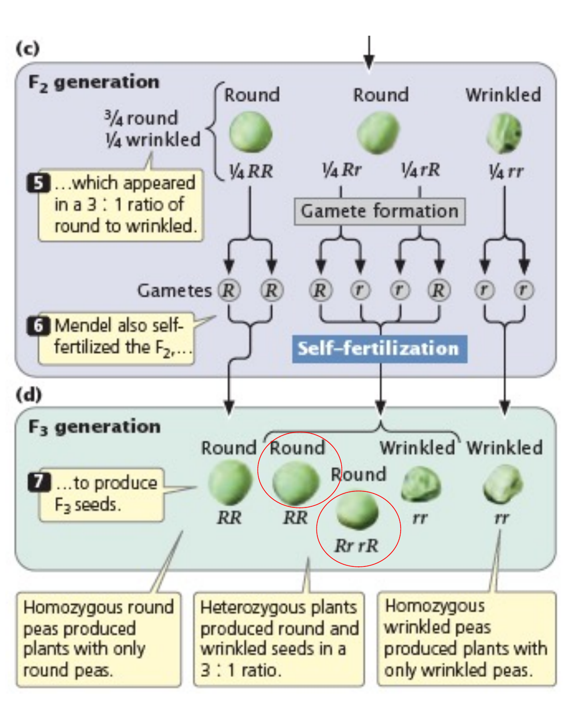

Từ F₂ lên F₃ và phân nhánh ba locus
Di truyền · Nguyên lý di truyền cơ bản · 4 trắc nghiệm và 1 tự luận
Bắt đầu học ↓Học trọn chương và làm bộ 80 trắc nghiệm, 15 tự luận
Sau buổi này
- Tính xác suất kiểu gen khi biết một kiểu hình.
- Lập basis từng cây F₂ và dùng F₃ để đối chiếu.
- Nhân xác suất ba locus độc lập.
Gợi nhớ
Ở phép lai Aa × Aa, trong riêng nhóm A_ có bao nhiêu phần là AA và bao nhiêu là Aa?
Học kiến thức qua hình
Quan sát hình minh họa

Sơ đồ gốc theo từng cây F₂ tự thụ. Ô cuối minh họa dòng RR cho hạt tròn và dòng Rr có thể sinh hạt nhăn.
Quan sát · So hai cây F₂ hạt tròn RR và Rr rồi theo các nhánh xuống F₃.
Dự đoán · Nếu thấy một hạt nhăn trong F₃ của một cây F₂ hạt tròn, suy được kiểu gen nào?
Mở giải thích sau khi dự đoán
Hạt nhăn cần nhận r từ cả hai giao tử. Cây mẹ F₂ hạt tròn chứa r vì đã sinh rr, nên thuộc Rr trong mô hình.
| Cây F₂ đã chọn A_ | Tỷ phần trong nhóm | P(con aa trong một lần) | P(lứa 4 có ít nhất một aa) |
|---|---|---|---|
| AA | 1/3 | 0 | 0 |
| Aa | 2/3 | 1/4 | 1−(3/4)^4 |
Cây phân nhánh mô phỏng theo slide Basic Principles tr. 26–28, 51–55.
Đọc hình để tự rút ra cơ chế
Quan sát · Cây F₂ nào có thể cho aa?
Dự đoán · Nếu khảo sát thêm nhiều F₃ trên mỗi cây, số lứa bị bỏ sót Aa thay đổi thế nào?
Mở giải thích sau khi dự đoán
Ở Aa, xác suất chưa gặp aa là (3/4)^n, giảm khi tăng n.
Điều kiện quan sát
Aa × Aa cho AA:Aa:aa = 1:2:1. Chỉ chọn cây A_, chuẩn hóa lại trên ba phần: P(AA|A_) = 1/3, P(Aa|A_) = 2/3. Tự thụ từng cây F₂ cho F₃. Nhận con aa chứng minh cây F₂ là Aa theo mô hình; không thấy aa trong một lứa nhỏ vẫn có thể do ngẫu nhiên.
Bài tính sâu hơn
Cơ sở tính: một cây F₂ chọn ngẫu nhiên từ nhóm A_, trồng riêng n = 4 cây con từ tự thụ. P(F₃ có ít nhất một aa) = P(Aa|A_) × [1−(3/4)^4] = (2/3)(175/256) = 175/384 ≈ 45,6%. So với cận 2/3: xác suất ít nhất một aa phải nhỏ hơn xác suất cây mẹ mang a. Đổi kỳ vọng trên 384 cây mẹ tương đương 175 lứa, không phải 175 cá thể aa.
Liên hệ thực tế
Phép tự thụ F₃ hoặc lai phân tích giúp phân biệt các cây có cùng kiểu hình F₂. Số con được ghi ảnh hưởng độ chắc của suy luận.
Cụm bài tập
Chọn cây đậu trội và theo dõi lứa con
Ba locus A,B,C phân li độc lập, trội hoàn toàn và có độ sống tương đương. Ở A, F₂ sinh từ Aa × Aa. Khi cần ba locus, dùng AaBbCc × AaBbCc. Lứa F₃ gồm bốn cây con độc lập từ phép tự thụ của cùng một cây A_ F₂.
Đối chiếu bài làm
Chọn một chỗ còn phân vân. Giải thích lại bằng lời của mình rồi thử một câu cùng dạng.